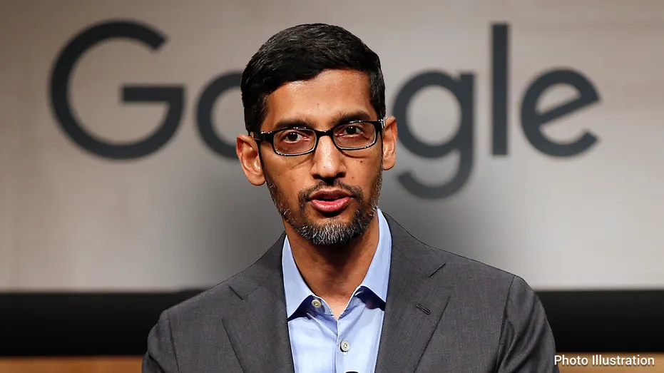

Sundar Pichai
CEO of Google
Sundar is the CEO of Google and Alphabet and serves on Alphabet’s Board of Directors.The man behind Google's famous search toolbar is the Google CEO

Satya Nadella
CEO of Microsoft
Satya Nadella is Chairman and Chief Executive Officer of Microsoft. Before being named CEO in February 2014, Nadella held leadership roles in both enterprise and consumer businesses across the company.
Mark Zuckerberg
CEO of Meta
Mark Zuckerberg is the founder, chairman and CEO of Meta, which he originally founded as Facebook in 2004. Mark is responsible for setting the overall direction and product strategy for the company